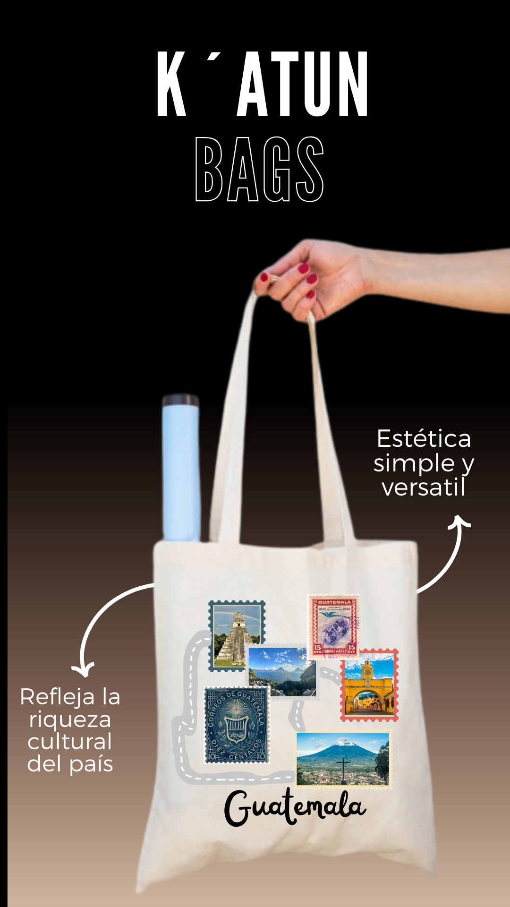

La bolsa ha sido diseñada como un viaje por los lugares turisticos más emblematicos de Guatemala,
así como por los sellos postales que reflejan la riqueza cultural del país. Esta inspiración
cultural se traduce en un diseño impreso en algodón, un material elegido por su durabilidad y comodidad
para el cliente. La eleccion de un unico color, el blanco, confiere a la bolsa una estética y versátil,
apta para cualquier ocasión.
Mas allá de su aspecto visual, la bolsa cumple una función practica al servir como un accesorio para
transportar artículos adquiridos durante los viajes, su reutilización fomenta una mentalidad sostenible
y contribuye a la reducción del uso de bolsas plasticas, está en linea con la busqueda de una sociedad más
consciente y respetuosa con el medio ambiente.